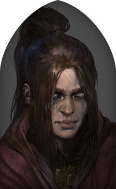

Diablo 4 nos vuelve a adentrar en las tierras de Santuario y, en esta ocasión, Blizzard nos deja escoger entre 5 clases de personajes diferentes. Como ya es tradición en la serie A-RPG, los jugadores podemos elegir una clase al inicio de la partida y después personalizarla a nuestro gusto según sus talentos y árboles de habilidades únicos.
BARBARO
En esta entrada de nuestra guía queremos enseñarte todas las clases presentes en esta nueva secuela para que sepas cuáles son sus diferencias, qué atributos o características poseen y cuál te conviene más escoger para empezar, entre otros detalles.
DRUIDA
"El druida es un cambiaformas salvaje, capaz de convertirse rápidamente en un enorme oso o en un temible hombre lobo para combatir junto a otras criaturas. Además, controla el poder de la tierra, el viento y la tormenta, y puede desatar la cólera de la naturaleza".
Puedes Visualizar una guia en detalles, atributos y habilidades del Druida en este link:
Hechicera
"La hechicera otorga a los elementos la forma necesaria para garantizar la victoria, y puede lanzar devastadores rayos, empalar a sus enemigos con afiladas púas de hielo o provocar una lluvia de meteoritos llameantes".
Puedes Visualizar una guia en detalles, atributos y habilidades de la hechicera en este link:
Picara
"La pícara es una luchadora ágil y versátil que puede especializarse en combate a larga o corta distancia. Es capaz de derrotar a cualquier enemigo con sus armas imbuidas, ejecutar potentes ataques de combo y potenciar su arsenal con venenos letales y magia de las sombras para aniquilar demonios con impunidad".
Puedes Visualizar una guia en detalles, atributos y habilidades de la Picara en este link:
Nigromante
"Los enigmáticos nigromantes son los custodios del equilibrio entre la vida y la muerte. Pueden levantar poderosos ejércitos de muertos vivientes para que luchen por ellos, pero también emplean magias de hueso, sombra y sangre".
Puedes Visualizar una guia en detalles, atributos y habilidades de la nigromante en este link: